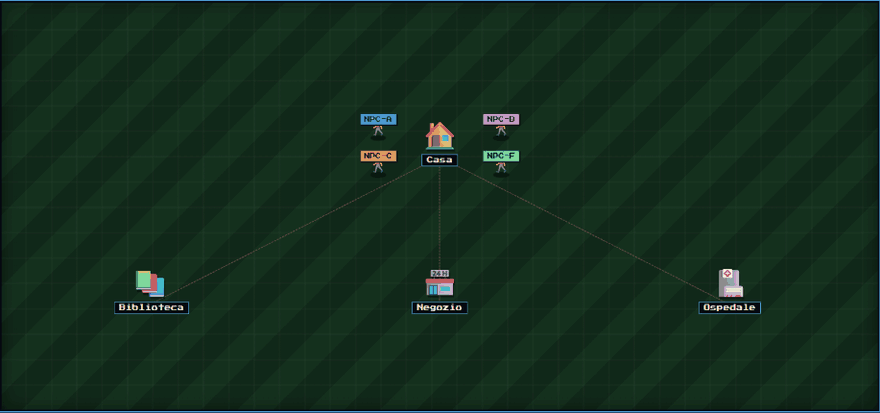

Independent research on a precise question: does a small language model really improve when it retrieves a procedure written in earlier attempts, or does it only need to see a similar answer again? To tell the two explanations apart, every task (Python functions with real bugs, checked by pytest) is run in four configurations: a larger model, a small model as the baseline, a small model with a general procedure retrieved, and a small model given the solution of a similar case.
Key findings
- In the first five complete runs the procedure library finished ahead of the baseline every time, with 7.8 percentage points more accuracy over 116 attempts. The result is encouraging but not conclusive: the runs are not independent replications and the library changed over time.
- In the largest early run only two of the ten covered patterns paid off. An overall improvement is not enough to justify every single procedure.
- Causal check: changing a value inside the retrieved procedure made the answer follow it 12 times out of 12, while changing an unrelated value had no effect (6 out of 6). The model chose the right rule but recited a value.
- After rewriting the procedure to ask for a derivation, the model computed tolerances across seven orders of magnitude.
- Cost: using a ready made procedure costs on average 116 to 343 more input tokens than the bare model, while building a new one costs about 1000 to 2000 tokens once per pattern.
- The same ideas were carried over into Aria, a study app for a real user with ADHD, as a second testing ground. In real use a comparison between groups has a composition bias, so a blind paired comparison is used. On 22 comparable pairs with a local model, retrieval scored 17 of 22 against 13 of 22 for the bare prompt, a result that is not conclusive yet.
How to run it
- Python 3.11 or newer and the dependencies listed in requirements.txt are required.
- The guided setup is started with python -m cognitive_rpg.settings_wizard.
- The experiment is launched with python -m cognitive_rpg.experiment.experiment_0. Mock adapters are available to develop without paid calls.
An independent research project, not a peer-reviewed paper. The code is visible for evaluation; reuse is not permitted.